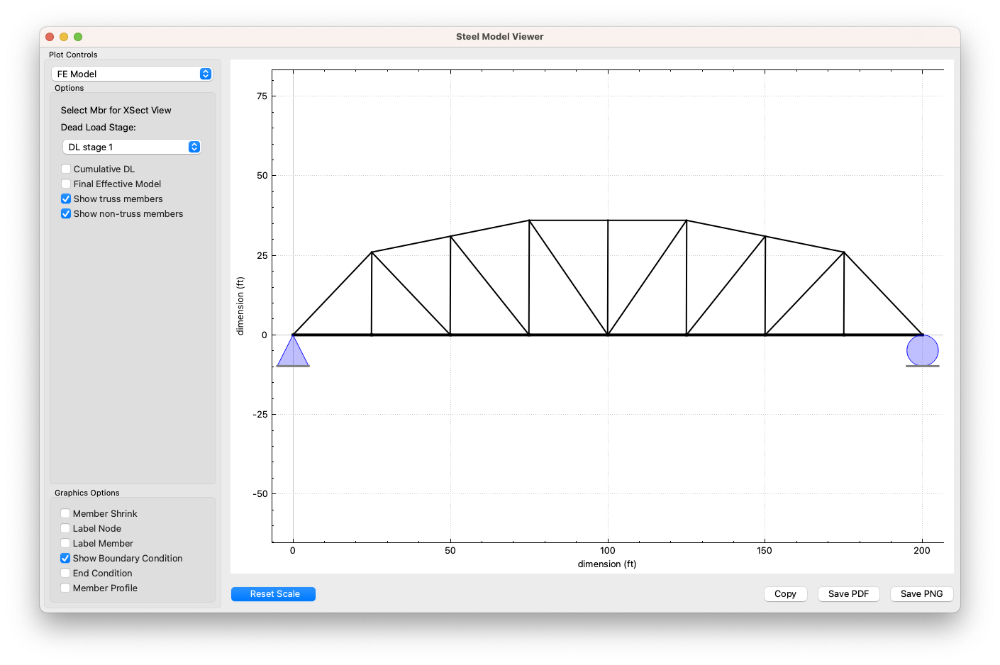

SteelBridg LRFR
Contents:
Getting Started
Data Entry
Theory
Frequently asked Questions
Examples
Validation
The Validation Set
Bridge 1: 5-203
Bridge 2: 5-645
Bridge 3: 5-670
Bridge 4: 31-36_Trss
Bridge 5: 31-36-FB
Bridge 6: 129-2_int_Stl
Bridge 7: 305-10_Trss
Bridge 8: 305-10_FB
Bridge 9: 507-114
Tables
SteelBridg LRFR
Validation
Bridge 3: 5-670
View page source
Bridge 3: 5-670
Type
Truss | Girder
Structure
Steel | Composite
Description
Input file
ValidationSet/5-670
